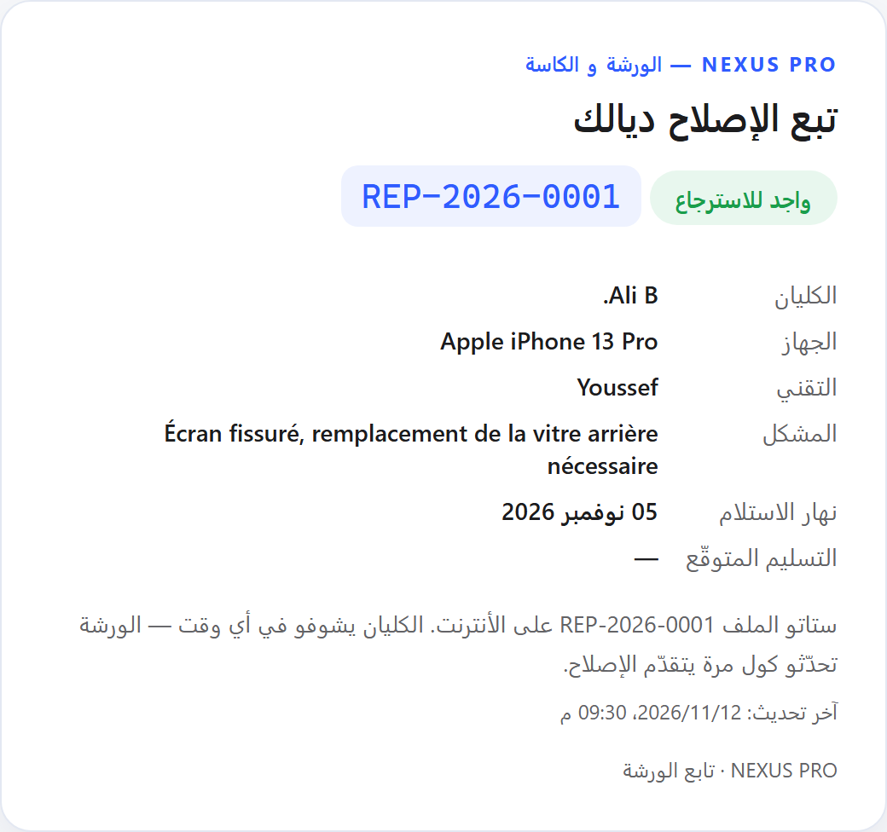

١ — تبع الإصلاح ديالك على الأنترنت
كل ملف إصلاح عندو صفحة خاصة… الكليان يشوف الستاتو في أي وقت، من أي بلاصة.

- التيكي اللي تعطي للكليان فيه QR — يسكانيه بالتيليڤون و يوصل دغيا لصفحة الملف ديالو.
- الستاتو بالدارجة و واضح: الجهاز وصل، راهو يتصلّح، نستنّاو قطعة، واجد للاسترجاع…
- يتحدّث وحدو: كول مرة تبدّل الستاتو في الورشة، الصفحة تتحرّك معاك — بلا ما الكليان يعيّط.
٢ — بوت تيليغرام يعلّم الورشة واش صار
تنبيهات دغية في شات الورشة: ديبو جديد، جهاز واجد، ستوك ناقص.

- ديبو جديد — كول مرة تدخل جهاز للورشة، البوت يعلّمك.
- جهاز واجد — كي ولّي الإصلاح « واجد للاسترجاع »، تعرف دغيا.
- ستوك ناقص — القطعة تنقص تحت الحد، تنبيه يجيك قبل ما يفوتك.
٣ — الكليان يتلقّى التحديثات وحدو على تيليغرام
من الأتوليه: « رسالة للكليان » تعطيك QR / رابط — الكليان يدير « ابدأ » و بعد يتلقّى كول تغيير ديال الملف ديالو.

- التيكي فيه QR تابع — كول تيكي يطبع بالكود، الكليان ما ينساش وين راح جهازو.
- بلا SMS و بلا مبالغ — تيليغرام مجاني، يخدم على الأنترنت.
- الخصوصية محفوظة — الكليان يشوف غير الملف ديالو، بلا حساب و بلا تعقيد.
شكون يقدر يخدم بـ NEXUS PRO؟
أي ورشة تصلّح تيليڤونات: تعطي تيكي، تتبّع الإصلاح، تسجّل القطع، تقبّض الفلوس… و تشوف البيلان ديالك كل نهار.